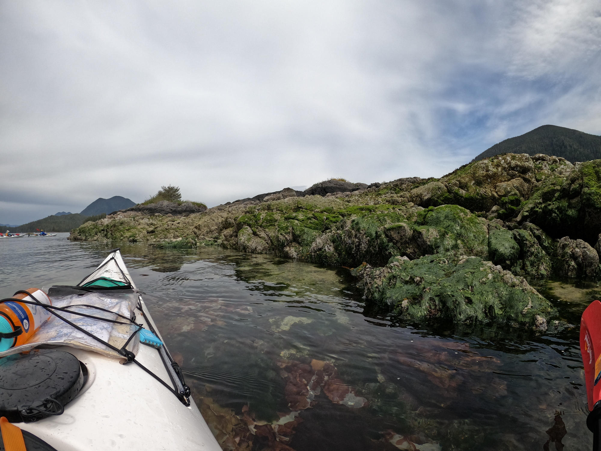
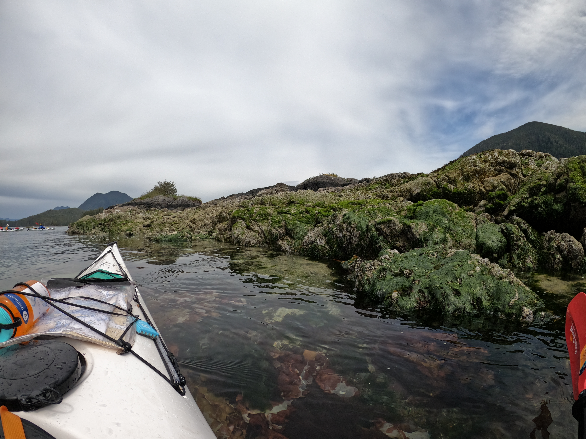
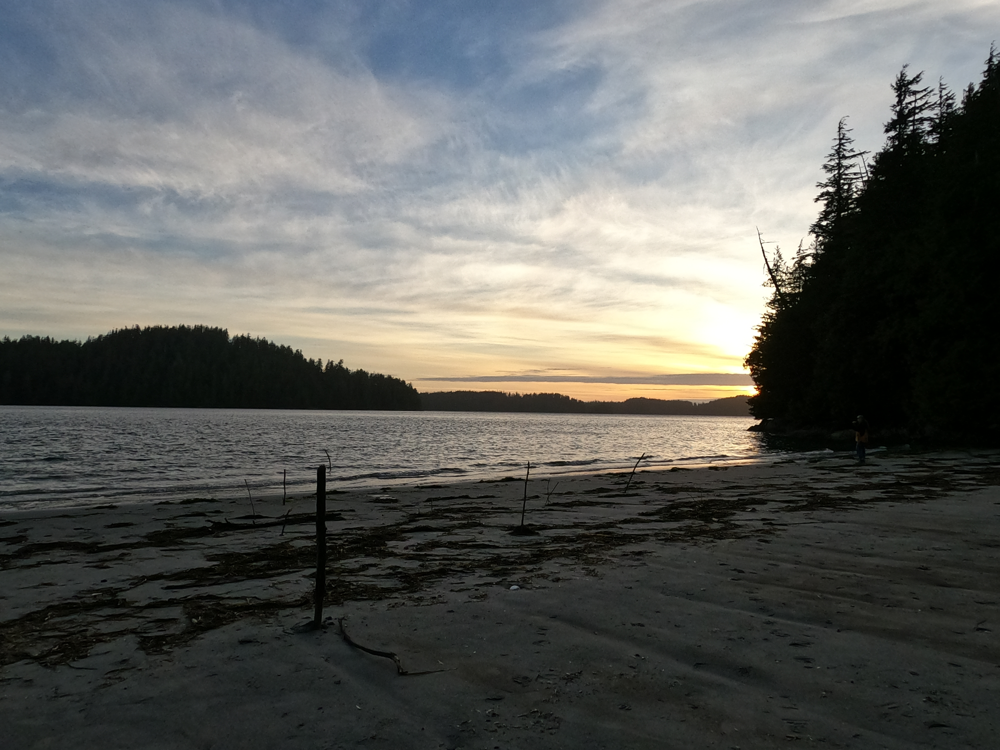
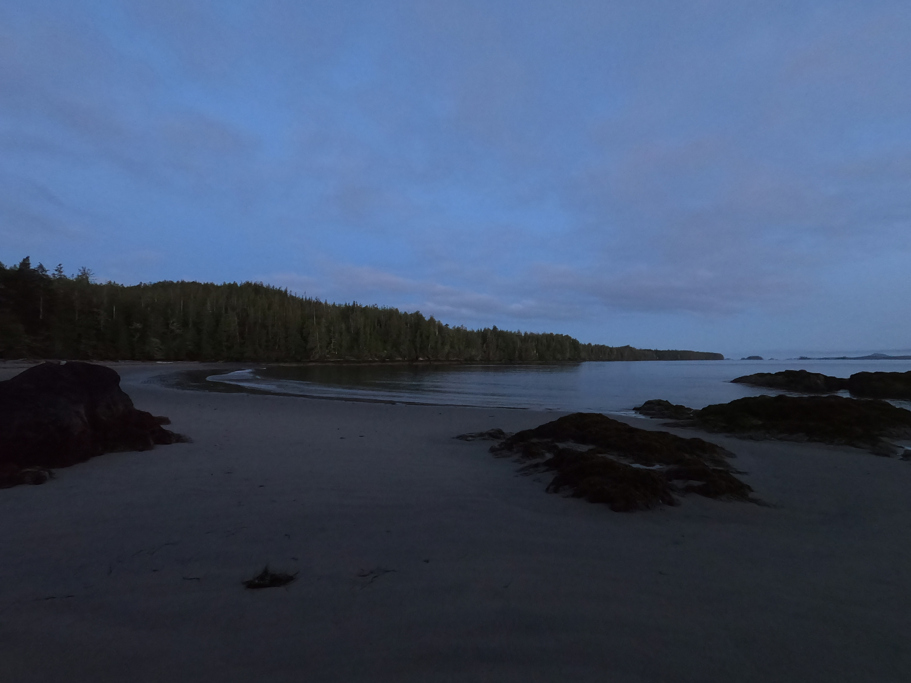
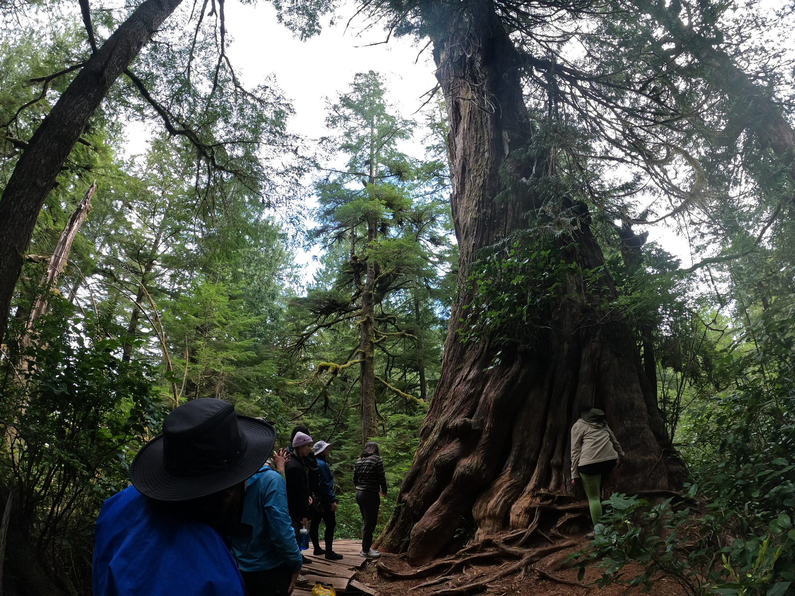

Fourteen days on water, twice. The kind of time that makes the rest of life feel a little less urgent.
Launching from Dublin Bay, paddling the rugged Atlantic coast around Ironbound Island and a scatter of smaller ones. Fog, swells, spruce shoreline, the particular silence of open ocean camping.
Launching from Tofino into one of the most intact temperate rainforests left on the planet. Old growth, open Pacific swells, orca country. The scale of things out here recalibrates you.




